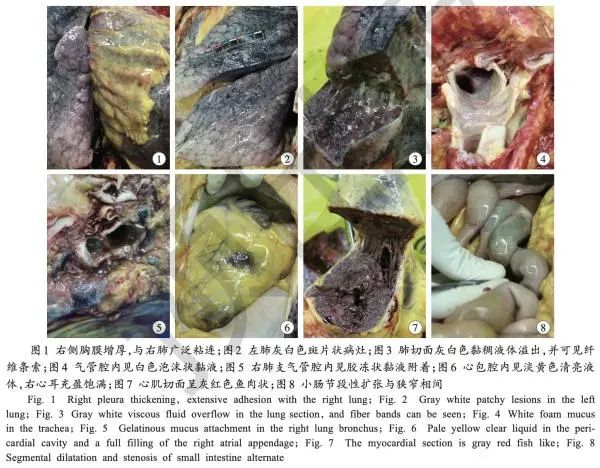

解剖遗体法医刘良：如果患者气道粘液没化解，给氧会起反作用
原文链接 备份链接 *************▲*************刘良和他的团队，右二为刘良。 （校方供图/图） 全文共1927字，阅读大约需要5分钟。 临床治疗上，如果粘液没有被化解的情况下给患者单纯给氧，可能达不到目的，有时 …
澎湃新闻记者 贺梨萍 张若婷
在法律政策允许并征得患者家属同意后，第一例、第二例新冠肺炎逝者遗体解剖工作已于2月16日在武汉市金银潭医院完成。2月16日至2月24日，由刘良及附属同济医院病理科王国平教授领衔的华中科技大学病理团队完成了9例遗体解剖。病理学专家卞修武院士和上海瑞金医院团队，也已完成2例新冠肺炎遗体解剖。
澎湃新闻记者：祝文博 编辑：林蓉 视频来源：相关人士 责任编辑：周琦
日前，刘良团队将其中一例尸体解剖观察预出版《新型冠状病毒肺炎死亡尸体系统解剖大体观察报告》（下称“《报告》”）发表于《法医学杂志》2020年2月第36卷第1期上，论文收稿于2月24日。通讯作者除刘良外，还包括华中科技大学同济医学院法医学系周亦武、任亮。除华中科技大学同济医学院法医学外，作者还包括湖北崇新司法鉴定中心、上海公安学院的工作人员。
《报告》内容为1例系统尸体解剖肉眼观察结果。研究团队指出，死者肺部损伤明显，肺肉眼观呈斑片状，可见灰白色病灶及暗红色出血，切面可见大量黏稠的分泌物从肺泡内溢出，提示新冠病毒主要引起深部气道和肺泡损伤为特征的炎性反应。
该病例因“多发性脑梗死”入院后第13天经新型冠状病毒核酸检测为阳性，确诊为新型冠状病毒感染患者。入院后第20天复查CT显示：双肺散在斑片状感染病灶，较前进展，考虑“病毒性肺炎”，原气管腔内分泌物已消失。入院后28天死亡，临床死亡原因诊断为“新型冠状病毒肺炎、呼吸衰竭”。
值得注意的是，此前由新冠肺炎死者尸体穿刺取样获得的组织局部病理学改变提示，新冠肺炎的病理特征与SARS和中东呼吸综合征（MERS）患者出现的病理特征非常类似。

但《报告》此番指出，从此例系统解剖大体观察来看，肺部纤维化及实变没有SARS导致的病变严重，而渗出性反应较SARS明显，这可能与此例患者从确诊到死亡仅15天，病程较短有关，有待更多系统尸体检验资料及组织病理学验证。
2月27日，在广州的疫情防控专场新闻通气会上，国家卫健委高级别专家组组长、国家呼吸系统疾病临床医学研究中心主任钟南山谈及新冠肺炎病理特点时同样提到，新冠肺炎和SARS不同，有个突出特点：小气道中黏液非常多，粘稠度很高，阻碍气道通畅，因而造成继发感染，以及更加严重化。目前从两个地方的病理结果都发现，在小气道清除黏液是重要研究对象。
《报告》显示死者胸腔积液量不多，淡黄色清亮液体，未见大量胸水产生，提示胸腔病变并非浆液性炎症为主。
此外，解剖见心包腔内中等量淡黄色清亮液体，心外膜轻度水肿，心肌切面呈灰红色鱼肉状。因患者临床资料显示存在冠心病、心绞痛病史，心肌及心外膜是否存在与病毒感染相关的损害表现有待进一步研究。
此例消化系统损伤情况肉眼观不明显。值得一提的是，研究人员发现小肠呈节段性扩张与狭窄相间（类似串珠状），为个例或普遍表现需结合更多尸体检验情况。脾肉眼观未见明显异常，是否存在病变需进行组织病理学研究。肾呈颗粒性固缩肾外观，考虑与基础疾病有关。
关于神经系统，肉眼观见脑水肿，大脑皮质轻度萎缩。结合临床资料，患者年龄大，有多发性脑梗死及脑血管病后遗症，脑肉眼观未见感染特异性表现，病毒是否侵犯中枢神经系统有待组织病理学验证。
刘良团队在《报告》中写道，新型冠状病毒肺炎自2019年12月起，已造成中国7万余人确诊感染，2千多人死亡。截至2020年2月24日，全国新冠肺炎患者死亡率达3.17%，此前报道的武汉金银潭医院早期收治的99例COVID-19患者中，死亡11例，死亡率为11%。
由于一直缺乏系统尸体解剖提供的完整病理学资料，研究人员对疾病的发病机制、器官损害等影响无法确切判断。刘良团队认为，这份尸解报告提供了直观的病变情况，或将为临床治疗方案的调整提供依据。
尸体解剖工作被认为是疫情防控的重要环节，是查明死亡原因、分析发病机理、追溯病源的金标准。值得一提的是，在此次尸体检验之前，目前与新冠肺炎死亡相关的病理检验报道有2篇，但均未进行尸体解剖。
其中一篇来自中科院院士、国家感染性疾病临床医学研究中心主任王福生教授率领的团队，他们的研究来源于新冠肺炎死者的穿刺材料的病理发现，于2月18日在国际著名医学学术期刊《柳叶刀-呼吸医学》(The Lancet Respiratory Medicine)发表，提示 新冠肺炎的病理学改变与急性呼吸窘迫综合征相关。另一篇来自武汉大学中南医院肖书渊主任医师团队，他们于2月16日在预印本网站Preprint发表文章，报道了1例肺肿瘤同时并发新冠肺炎患者肺切除术后肺组织的病理检验结果，有与上述穿刺样本类似的改变。
戳这里进入
“全国新型冠状病毒感染病例实时地图”↓↓↓
本期编辑 常琛
推荐阅读


原文链接 备份链接 *************▲*************刘良和他的团队，右二为刘良。 （校方供图/图） 全文共1927字，阅读大约需要5分钟。 临床治疗上，如果粘液没有被化解的情况下给患者单纯给氧，可能达不到目的，有时 …
原文链接 备份链接 澎湃新闻记者 张唯 了解危重症患者的临床特征对于降低新型冠状病毒肺炎的死亡率至关重要。当地时间2月24日，华中科技大学同济医学院、武汉市金银潭医院、武汉大学人民医院等机构在《柳叶刀呼吸医学》(The Lancet …
原文链接 备份链接 研究者正试图揭示新冠病毒的致病性、致死性机制，为临床治疗提供新依据，阶段结果是新冠病毒的致病特征与SARS相似，而进一步的结果或将由解剖揭开 2020年2月初，武汉金银潭医院隔离病区内，医护人员正在给新冠肺炎患者做治 …
原文链接 备份链接 “病理诊断是疾病诊断的金标准”2月16日凌晨3点50分，全国首例新冠病毒肺炎患者遗体解剖工作在武汉市金银潭医院顺利结束，由华中科技大学同济医学院法医病理学教授刘良及其团队完成，14小时后，他们又完成了第二例遗体解剖 …
原文链接 备份链接 2 月 17 日，《柳叶刀 · 呼吸医学》（_The Lancet Respiratory Medicine_）在线发表了首份基于尸检样本的新冠肺炎病理学报告。 该论文通讯作者之一为中科院院士、解放军总医院第五医学中心 …